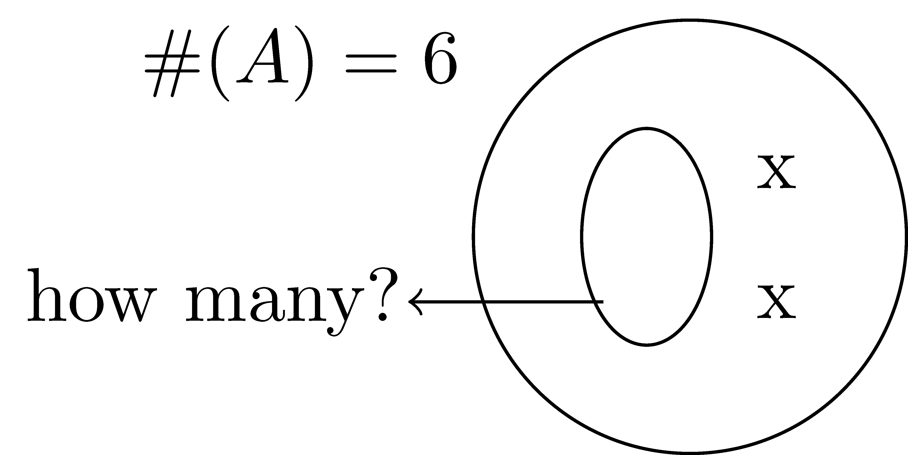

4.2 Representations of Integers
Implicit to our discussion of number systems is the idea of representation. While the previous chapter focused on the concept of “3” in terms of equivalence and equality, representation is concerned with how we choose to communicate that we are currently using three in our mathematical process. As advanced students of mathematics, it is easy to take for granted the ways that we communicate fundamental notions such as number or operation using symbols like “3.” However, the numbers and symbols we take for granted are choices that have been made and agreed upon.
While the choices often allow for efficient communication, they are often not the most obvious choices for developing conceptual understanding of the abstract objects they represent. For example, when was the last time you saw negative 3 things in the natural world? While we understand the notion of “I owe 3 dollars,” the concept of owing money is an abstract concept, not a physical one. It takes a long time for students to develop the conceptual understanding of how to work with mathematical objects they cannot physically combine or otherwise manipulate. Fortunately, because the negative sign is a choice of one among many, we can choose different representations of negative numbers and other abstract mathematical objects to facilitate our teaching. This section examines some of the other choices we can make for representing our numeration system and the four common operations.
4.2.1 Numeration Systems
When we write the number \(13,436\), we are communicating how many of something we have. To understand just how many things \(13,436\) is, we need two fundamental ideas: digit and place value. For example, in \(13,435\) we used the \(3\) twice: once in the tens place value and once in the thousands place value. In these cases, the digit \(3\) communicates how many of each place value we have. Together, the set of digits and a shared understanding of place value gives us our current numeration system.
The Hindu-Arabic Numeration System is the numeration system we use in most of the world today. It is composed of three main ideas:
- A set of \(10\) digits: \(\{0,1,2,3,4,5,6,7,8,9\}\)
- A base \(10\) place value system
- Reliance on a digit that means “none”
Note that these are choices: the base of a place value system determines how many digits you need. While our culture has settled on base \(10\) (based on the number of digits on our hands), the Mayan’s developed a base-\(20\) system (based on the number of digits on hands and feet) and computer machine language uses a base \(2\) system (based on a signal being on or off).
The place value base is used to build the place value by using exponential powers of the base value. For example: \[1234.567 = 1 \cdot 10^3 + 2\cdot 10^2 + 3\cdot 10^1 + 4\cdot 10^0 + 5\cdot 10^{-1} + 6 \cdot 10^{-2} + 7 \cdot 10^{-3}.\]
Although this probably all sounds like review and very obvious, these are not obvious choices. It took a long time for human civilizations to develop the base number systems and children have to be indoctrinated into it. It is not an easy idea that “3” in one position does not have the same meaning as a “3” in another position. Although this section focuses mostly on representation of number, the use of symbols taking on multiple meanings in mathematics in different contexts is one with which mathematics teachers must repeatedly grapple.
To better understand the power of these systems, we will examine a couple numeration systems that have different combinations of the properties of the Hindu-Arabic system.
Example 4.1 (Egyptian Numeration) The Egyptian numeration system uses individual Hieroglyphs to hold value, with new symbols needed for each power of \(10\)). To communicate multiples of a particular power of ten, the Egyptians used repeated Hieroglyphs. For example, the water lily or lotus Hieroglyphs means \(1,000\). A sequence of three water lily Hieroglyphs would mean \(3,000\). There are no requirements on how Hieroglyphs are presented, so the Hieroglyphs communicating “\(1\)” could appear at any place in the expression for the number, and did not even have to appear together. A clear con of this system is that new symbols are needed for each power of \(10\) would require a new Hieroglyph. In addition, the lack of an ordering or organizational system would make large numbers potentially cumbersome to read.

Example 4.2 (Roman Numeration) The Roman numeration system is similar to the Egyptian system, in that the Roman numbers are each unique to a particular value (for example, X means \(10\)). The Roman system improved on the Egyptian numeration system by imposing an order to how these numbers could be presented and partially solved the potential for a large number of repeated numbers by adding the subtraction element (so, IX would mean take \(1\) away from \(10\), while XI means add one to \(10\)). However, as students of the Super Bowl know, reading these numbers still takes a fair amount of decoding and there is a still a problem with needing a new number for each new grouping.
| Arabic Numeral | Roman Numeral |
|---|---|
| 1 | I |
| 10 | X |
| 100 | C |
| 1,000 | M |
While there is no obvious use for students to learn operations in a different base, working outside of our base 10 system can help teachers recognize and understand the inner workings of the base 10 system and its associated algorithms. As these algorithms are introduced throughout the section, you are encouraged to use the algorithms to perform operations on numbers in these additional base systems.
Example 4.4 (Base \(12\)) The duodecimal (base 12) number system is a component of some languages in West Africa and Nepal and is used in our everyday measurements of dozen and gross. A duodecimal system requires twelve digits, \(0,1,2,3,4,5,6,7,8,9,t,e\), and place values are based on powers of \(12\). In this system \(6+5=e\), \(7+8=13\), and \[3t \times e4 = 2te4.\]
One of the implications of a base 12 system is additional tricks for multiplying numbers due to a larger number of factors of twelve than ten.4.2.2 Representations of Number
In talking about numeration systems, we have exclusively been using one form of number representation. However, numeration systems are only one way that we communicate ideas about number. In this section, we explore different ways of representing numbers, each which helps develop different properties of numbers. For this introduction to representation, we focus first on the positive natural numbers, adding additional elements to these representations as we develop the various number systems.
Sets.
As discussed in Chapter 3, we can think of 3 as an equivalence class for all sets containing 3 objects. (We will go into this in more detail in Section 5.4.) As such, sets can be used to represent numbers, either pictorially as a circle containing generic objects or as a set with general elements. Using sets offers the most general representation of number we can develop, as it does not impose any structure on the representation beyond the property of ``how many’’. Relationships between numbers (such as inequality or equality) are fairly straightforward to model, but comparing a large number at one time would be difficult using this representation. As a result, most middle and high school textbooks do not represent numbers this way, although it is fairly common in the elementary grades.
 or \(\{a,b,c\}\).
or \(\{a,b,c\}\).
Number Line.
The number line imposes more structure on the number representation than the use of sets. In particular, it organizes numbers along a line, with integers spaced evenly along the line. This representation allows multiple numbers to be visualized at the same time while also showing relationships between the numbers represented. In this representation, any number that falls at the location of 3 is equivalent to three. Numbers of the left of 3 are less than it, while numbers above are greater.

Base-10 Blocks.
Base-10 blocks are usually a physical way (although virtual and pictorial versions exist) to represent numbers specifically designed to promote understanding of place value. The blocks come in four sizes: units (small, approximately 1-centimeter cubes), rods (10, represented by a stack of 10 unit cubes), flats (100, represented by a 10 by 10 grid of unit cubes), and big cubes (1000, represented by a cube with side lengths equal to 10 unit cubes). Representing a number using base-10 blocks means drawing or collecting the correct number of blocks for each place value.

In order to write down the reasoning these blocks are sometimes transitioned into dots, lines, and squares. So that \(13+24\) is represented by
Cuisenaire Rods.
Cuisenaire rods are another physical way that numbers are represented. They are a collection of long prisms of different colors and lengths. Rods of the same length are the same color, and each length is a natural number multiple of the smallest rod. These rods are used for a variety of reasons including factoring of natural numbers, but one of the most common is to help students understand concepts related to rational numbers and the operation of division.
Figure 4.1: Cuisenaire Rods
4.2.3 Addition Models and Algorithms
Much like the concept of number, it is easy to overlook how quickly addition becomes a complex endeavor for young students of mathematics. Fundamentally, addition represents the notion of ``combine’’ or finding the union of mutually disjoint sets.

Typically, we quickly move away from representing addition using sets and instead use the number line. For natural number addition, this process is fairly straight forward: Students start by identifying the first addend. Then, count up the number that is being added. The number you land on is the result.

Thinking of addition as the union of sets or on a number line of the natural numbers are good, conceptual starting places for understanding addition. However, doing so will lead some students to think that “when two numbers are added, the result will be the same size or bigger.” In the natural numbers this thinking will work, but in the integers the reasoning begins to fall apart. Note that idea of “combine” does not say anything about the size of the result relative to the others, so the common error is a result of students focusing on the result rather than the concept of addition.
When asked to add something like \(125+258\) without the use of a calculator, most adults are well-trained to rewrite the sum and apply the standard algorithm.

While the work of teaching children these algorithms is usually done in elementary school, it is worth taking a little time to appreciate the ways these traditional methods take advantage of the properties of natural numbers to allow for quick and efficient calculation. To facilitate this discussion, we present several alternative algorithms. It is not our goal to instruct our readers in each of these algorithms: there is not a way to present all possible ways an addition problem can be solved. Rather, we choose algorithms that maximize the opportunity to explore the hidden work of the standard algorithm. A mathematics teacher who studies these examples in relation to the standard algorithm should be able to teach themselves unfamiliar algorithms that they encounter in the wild. For each of these, we use the example \(125+258\).
Expanded form.
We can rewrite our numbers using place value as \((100+20+5)\) and \((200+50+8)\) and then use associative and commutative properties of addition for the natural numbers.
\[\begin{align*} 125+258 &= (100+20+5) + (200+50+8) \\ &= (100+200) + (20+50) + (5+8) \\ &= (100+200) + (20+50) + (13) \\ &= (100+200) + (20+50) + (10 + 3) \\ &= (100+200) + (20+50+10) + (3) \\ &= 300 + 80 + 3 =383 \\ \end{align*}\]
Lattice Algorithm.
The lattice algorithm described below provides another method of adding two numbers by keeping track of place value through some implicit methods.
- Stack the two numbers so that corresponding place values are in the same column. Draw the traditional equals bar.

- Starting with the right-most column, add within each column. The result of the digit addition will be a number between 0 and 19. The resulting number is written into the square below the column, with the higher place value going into the higher triangle.
- Add down each diagonal. You are in effect adding the total number of items in each place value.

Expanded algorithm.
The expanded algorithm makes the implicit structure of the lattice algorithm more explicit.

You may have noticed that regardless of which method we used, there were several common elements that all of the algorithms created in one form or another. Perhaps most obviously, \(13\) occurred in all three calculations. The intermediate sums an algorithm produces are called partial sums. Note that although every algorithm used partial sums, they are not always the same between algorithms, even for the same addition problem. These differences in partial sums are a result of where the algorithm does the regrouping of the partial sums. Regrouping, generally, is the process of converting numbers expressed in terms of one place value into a different place value. For example, in the standard algorithm example at the beginning of this section, we got \(13\) when we added the ones digits in the right most column. Since \(13\) ones is not useful for continued adding, we regrouped \(13\) as \(1\) ten and \(3\) ones. We wrote the \(3\) in the ones place value and the \(1\) above the \(10\)’s place value column. You may have learned this process by the name of “carrying the one”. This language is no longer encouraged in teaching as it masks the fact that the value of the one changes as a person works through every place value.
4.2.4 Subtraction Models and Algorithms
Conceptually, we described addition as the process of combining. Subtraction has two different physical interpretations: the process of removal (often referred to as taking away) or the inverse operation of addition. These are clearly related, but are developed separately, which we explore a bit more in the following paragraphs. Although both interpretations of subtraction seem straight forward when modeled in the physical world, students struggle with this operation a great deal more than addition. This may be at least partially because while the natural numbers have some great properties under addition (closed, commutative, and associative) that make addition easy to set up, but none of these properties under subtraction.
Using our different representations, we can model subtraction a couple different ways: the take away model or the missing addend model.
Take-Away Model.
The first interpretation of subtraction is as removal or the process of taking away. In the mathematics education literature, this is called the “take-away model”. This conceptualization of subtraction is a direct interpretation of the calculation \(a-b\), where the translation of this expression is “\(a\) take away \(b\).”
To model \(a-b\) using sets and the take-away model, we start with a set containing \(a\) elements and remove \(b\) elements from it. The composition of the set after the removal process is the resulting difference.

To model \(a-b\) using the number line and the take-away model, we find \(a\) on the number line and then move back \(b\) units. The place where you land is the resulting difference.

Once we have introduced the integer number system, we extend the number line and think of \(a-b\) as \(a+(-b)\) where \(-b\) is viewed as a vector of length \(|b|\) pointed in the negative direction.

Related Content Standards
- (6.NS.6) Understand a rational number as a point on the number line. Extend number line diagrams and coordinate axes familiar from previous grades to represent points on the line and in the plane with negative number coordinates.
- Recognize opposite signs of numbers as indicating locations on opposite sides of \(0\) on the number line; recognize that the opposite of the opposite of a number is the number itself, e.g., \(-(-3) = 3\), and that \(0\) is its own opposite.
Missing Addend Approach.
The missing addend approach interpretation of subtraction is an explicit model of subtraction as the inverse operation of addition, while converting the computationally more nuanced subtraction problem into an addition problem where the number facts and such are easier. In particular, in the missing addend approach, the subtraction expression \(a-b\) is assumed to equal some unknown (so \(a-b=?\)), which we can rewrite as \(b+?=a\).
Using the set model and the missing addend approach, we take the statement \(b+?=a\) to mean that we know that we want a set to contain \(a\) elements and we have \(b\). We must determine how many additional elements we need in order to bring the total number of things in our set up to \(a\).

Using the number line, we reconceptualize \(a-b=?\) As \(b+?=a\) which means we start at \(b\) on the number line and then find \(a\). We then ask, how much do I have to move (and in what direction) from \(b\) to get to \(a\)?. The answer to this question is the answer to the original subtraction problem. This process when formalized into an algorithm that counts up by place value is called counting up.
Note that in none of the conceptual work of this section have we used the language of larger number and smaller number, instead focusing on the expression of the difference, \(a-b\). Early instruction in subtraction only presents cases of subtraction problems \(a-b\) when \(a\geq b\) and both are natural numbers. As a result of this presentation bias, students sometimes develop the impression that the results of subtraction will always be smaller than the original number. They may also believe that subtraction when \(a<b\) cannot be done. The conceptual work we have developed in this section for the models of subtraction works for most sets of numbers students encounter in the K-12 mathematics curriculum.
As with addition, we have a standard subtraction algorithm. For example, consider the subtraction problem \(423-368\). A well-trained student asked to do this problem without a calculator will produce work that looks something like the following:

As with addition, the traditional subtraction algorithm uses regrouping strategies and the properties of place value to allow for quick calculation in a small amount of space. (You may have learned the regrouping strategy under the name “borrowing” but, as with addition, this name is no longer used for similar reasons.)
We next provide several alternative algorithms for subtraction designed to help develop conceptual understanding of the subtraction algorithm.
Equal Addition.
The equal addition algorithm repeatedly adds zero to the problem in a way that makes the subtraction easier to compute. The goal is to write an equivalent problem that has at least one zero place value.
\[\begin{align*} 423-368 &= 423-368 + (2-2) = 425-370 \\ &= (425-370) + (30-30) = 455-400 \\ &= 55 \end{align*}\]
Partial Differences.
Another method of subtraction is to subtract from left to right with partial differences. In this case, we subtract the smaller digit from the larger digit, keeping track of positive or negative.

In the section on subtraction, we commented that when students first learn subtraction in the natural numbers, they are usually only given examples of the form \(a-b\) where \(b\leq a\). Part of the reason for only having students work on these types of problems is that children are not born knowing about negative numbers. The only place we ``see’’ negative numbers in the real world is when humans have imposed a scale on something, such as temperature. However, this is not a true physical representation, since we have simply imposed a scale on a naturally occurring thing, where for one reason or another, we want to have a zero reference point.
To allow us to find answers to subtraction problems where \(a<b\), we expand our number system to the integers. You may have noticed that we use “\(-\)” in the above paragraph to mean additive inverse of a positive number. In the paragraph before that we used the same symbol to mean subtraction. In reality, these are fairly different concepts. Subtraction is an operation. Additive inverse is a relation. Long-time students of mathematics know that these interpretations are related and will move between them fairly seamlessly, but they are not the same thing.
4.2.5 Multiplication Models and Algorithms
Repeated Addition.
Most commonly, multiplication is described as repeated addition. For example, the product \(2\times 4\) can be understood as adding \(2\) four times (\(2+2+2+2\)), while the product \(4\times 2\) can be understood as adding \(4\) two times (\(4+4\)). While conceptually, this link between addition and multiplication is important, it quickly loses efficiency in practical applications (e.g., it would be cumbersome but possible to multiply \(23\times 345\) using repeated addition). that said, it is not uncommon to see secondary students apply this approach to multiplication problems.
Rectangular Array.
Another way to represent multiplication is through a rectangular array. One way to think about this is counting the number of chairs in \(a\) rows and \(b\) columns. Such arrays are discrete sets. We can see below how one can use two arrays to represent \(3\times 5\) and \(5 \times 3\).
We can see that the two arrays are related to each other by a rotation. In other words, the order of multiplication is simply a different perspective on the same array.
Area Model.
While arrays work well for representing multiplication of natural numbers, they do not work well for integers, rational numbers, or real numbers. So we generalize the array model to an area model. If we change the dots in the array to blocks of 1 square unit measure, the above arrays become rectangles with square tiles helping students see the connection between the area of a rectangle and multiplication.

This area model can then be generalized to help students multiply multi-digit natural numbers and the relationship to the distribution property.

Lattice Multiplication.
The area model can become unwieldy with larger numbers. The lattice multiplication algorithm is a more abstract view of the area model by using a lattice to keep track of place values. Here we can see the progression of using a lattice model to multiply \(54 \times 68 = 3672\).


After setting up the lattice with diagonals, we multiply all of the partial products and enter the product in the corresponding square with the one’s digit in the bottom right and the ten’s digit in the upper left. After all of the partial products are complete, we add along the diagonals in order to find the number of units of that place value. For some products, the sum along the diagonal is larger than \(9\) and so we have to regroup as is the case for \(1564 \times 63\).
Partial Products.
We continue the progression of creating more abstract algorithms for multiplication by removing some of the explicit structure using the partial products algorithm.

Standard U.S. Multiplication Algorithm.
If we continue down the path of more abstract algorithms we come to what is considered the standard algorithm for multiplication. In this algorithm we compress the information in the partial products algorithm into many fewer lines.

However, with this reduction in the number of lines comes an increase in the number of things that one must keep track of implicitly.
4.2.6 Division Models and Algorithms
Division is the fourth major operation. Conceptually, the division problem \(a \div b\) can be viewed several ways: as repeated subtraction, as the inverse of multiplication, and as a partition. Regardless of the model, all three of these representations draw on the notion that when we divide \(a\) by \(b\) (\(a\div b\)) the division operation produces two unique numbers: the quotient, \(q\), and the remainder, \(r\), where \(0\leq r <b\). (We will go into this division algorithm more in-depth in Section 7.1.) We call \(b\) the divisor and \(a\) the dividend. These four quantities are related by \(a=bq+r\).
Repeated Subtraction Model.
In the repeated subtraction model of division, the division problem \(a\div b\) conceptually is thought of as repeatedly subtracting \(b\) from \(a\) until you no longer have a number bigger than \(b\). The quotient is the number of times you could subtract and the remainder is what is left over after the quotient has been determined.
Missing Factor Model.
In the missing factor model, the division problem defines division as the inverse operation of multiplication. The quotient and remainder are not separated. Instead, we reorganize the quantities in their reciprocal relationships in the equation \(a=bq+r\). Generally, we use the missing factor approach when \(r=0\). In particular, if \(a\div b = q\), where \(q\) is a unique value, then we rewrite the problem as the product \(bq=a\).
Set (Partition) Model.
The set (partition) model frames the quotient as a partition of the whole, \(a\), into \(b\) even parts. In particular, \(a\div b\) is thought of as asking if I must evenly distribute \(a\) between \(b\) entities, how much will each entity get? While in practice, the finding of the quotient for both the partition and repeated subtraction models are similar, conceptually, the two methods handle the remainder differently. The repeated subtraction approach reports the remainder, while the partition model invites the person completing the problem to keep going until all parts of \(a\), including \(r\), have been evenly distributed.
4.2.6.1 Division Algorithms
The long division algorithm is the last major algorithm students learn. If we examine the work of the long division algorithm, presented below, a few things are apparent. First, the algorithm is the only one that does not begin work with the ones place value, making it an anomaly in students’ learning. Secondly, it relies on students to have mastered the subtraction algorithm. And lastly, when we have multi-digit divisors, estimation is an important prerequisite skill. These factors all make the division algorithm particularly tricky to master.

With the widespread availability of cheap and accurate calculators, it is worth asking why we still teach the division algorithm (or really, most advanced arithmetic). And indeed, long division is not emphasized in the curriculum as much as it used to be for this very reason. We do provide a brief treatment here as the division algorithm, while not widely used in daily life, does lay a foundation for polynomial division, discussed in later chapters. In partial products algorithm presented below, pay particular attention to how the various division models are codified into the structure of the algorithm and how the partial quotients differ or are similar to those of the standard algorithm.
4.2.7 Exercises
Use the definition of base \(5\) in this section to answer the following questions.
- What is the base \(5\) number following \(4_{5}\)?
- Express \(234_{5}\) in base \(10\).
- Express \(234_{10}\) in base \(5\).
Add \(342_5+134_5\) using each of the four addition algorithms presented in this section.
Complete the product \(234_5 \times 32_5\) using each of the three multiplication algorithms presented in this section (lattice, partial products, standard).
Complete the division problem \(341_5 \div 41_5\) using any division algorithm discussed above.
Construct the addition and multiplication tables for the first twelve digits in a base \(12\) system. What patterns do you notice?
Read up on the Mayan numeration system, which is a base \(20\) system.
- Describe the patterns used to develop the 20 digits.
- How is this system comparable to the numeration systems discussed in this section.
For the two-number lattice addition, will adding along a diagonal ever require a student to regroup? Why or why not?
The standard addition algorithm requires that a person adds columns right to left. Many students just learning the algorithm will make the mistake of starting with the left most column and working towards right.
- What conceptual understanding is a student missing when they make this type of error?
- Which of the three non-standard algorithms will result in a correct sum regardless of whether a person adds right to left or left to right?
- Which of the four algorithms presented in this section might help students develop the conceptual understanding you identified in part (a)?
Another common error students make with the standard addition algorithm is that students will line up the first digit of a number with the first digit of the second number, regardless of whether or not the numbers have the same number of digits.
- What conceptual understanding is a student missing when they make this type of error?
- Which of the four algorithms presented in this section might help students develop the conceptual understanding you identified in part (a)?
Using a set of base-ten blocks (or a virtual base-ten block simulation), model the addition problem \(348+753\).
- Write out the arithmetic steps you went through in completing the addition using the blocks.
- Describe how base ten blocks might support conceptual understanding of the standard addition algorithm.
How does the standard multiplication algorithm utilize each of the four properties of the natural numbers (commutative, associative, distributive, identity)?
Why, in multiplication by multi-digit numbers in the standard multiplication algorithm, do you sometimes include zeros in the right most digit places?
For each model of division (e.g., repeated subtraction, partitions, missing factor), explain why the quotient \(a\div 0\) does not make sense.